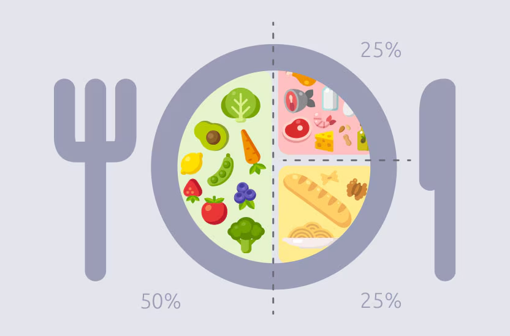

Un plato de ejemplo para las comidas principales

Una forma sencilla de organizar comidas y cenas es dividir el plato en tres partes: la mitad con verduras y hortalizas, un cuarto con cereales integrales o carbohidratos de bajo índice glucémico (arroz integral, legumbres, patata con piel) y el último cuarto con una fuente de proteína magra (pescado, huevo, legumbres o carne magra). Más contexto en la noticia sobre la guía NICE 2026 y sobre los patrones alimentarios de base vegetal.
Ideas para el día a día
- Prioriza fruta entera frente a zumos, ya que aporta más fibra y produce una subida de glucosa más lenta.
- Cambia los cereales o el pan refinado por versiones integrales siempre que puedas.
- Incluye legumbres varias veces por semana como fuente de proteína y fibra.
- Modera los ultraprocesados y las bebidas azucaradas, presentes en muchas rutinas sin que nos demos cuenta.
Estas ideas resumen los mensajes generales de nuestra noticia sobre pérdida de peso y control metabólico.
Rutina semanal: actividad aeróbica
Las guías generales recomiendan unos 150 minutos semanales de actividad aeróbica moderada: caminar a paso ligero, nadar, ir en bicicleta o bailar son buenas opciones que se pueden repartir en sesiones de 20-30 minutos la mayoría de los días. Más información en la noticia sobre ejercicio y prevención de la diabetes tipo 2.
Rutina semanal: fuerza
Complementar el ejercicio aeróbico con 2 sesiones semanales de entrenamiento de fuerza (con el propio peso corporal, bandas elásticas o pesas) se asocia a mejoras adicionales en el control glucémico. Puedes empezar con series cortas y aumentar la intensidad de forma progresiva. Más detalles en la noticia sobre entrenamiento de fuerza y HbA1c.
Pausas activas y estiramientos
Además del ejercicio programado, procura interrumpir los periodos largos sentado cada 30 minutos: levantarte a caminar un momento o hacer unos estiramientos suaves ayuda a mejorar la glucemia a lo largo del día. Lo explicamos con más detalle en la noticia sobre interrumpir el sedentarismo.